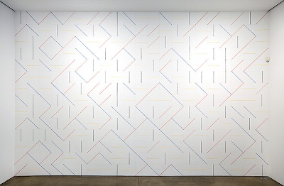
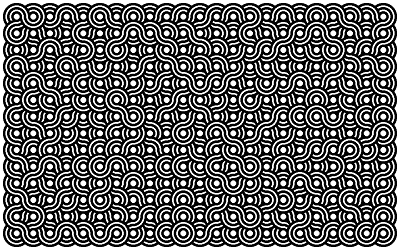

More Fun With For Loops
Create a website that illustrates the use of For Loops, Randomness, and Arrays in drawing on the HTML canvas as outlined below.
Turning it: To turn in this project, you should place the website in a folder called randomloops inside of your class website and link the site from your main class homepage.
Requirements:
The site should contain at least these pages:
- (1 page) A home page with a title and links to the pages listed below. Each page below should include a Spork canvas on which your image is drawn.
- (1 page) Draw a grid of circles so that the radius of each circle is random.
- (1 page) Use your creature function to draw copies of your creature on a grid so that every version of the creature is a random size.
- (1 page) Create a new randomCreature(x,y,r) function that draws a copy of your creature with random colors at (x,y) with radius r. Use arrays to limit the range of colors that are possible. This may involve these steps:
- Select at least two different regions of your creature that are different colors.
- Rewrite the color declarations for those regions using variables. For example, if my creature has blue eyes, instead of color('blue'); I might use color(eyeColor); where eyeColor is a variable.
- Construct an array with possible colors. This might look like var possibleEyeColors=['blue','green','orange'];
- Use the arrays to set the random colors. This might look like eyeColor=possibleEyeColors.random();
- (1 page) On this page, you will draw a random picture in the style of this Sol Lewitt wall drawing: 
You should consider these steps:
- Consider this square centered at (x,y) with width and height 2r:
- Make four functions with calls such as segment1(x,y,r). One function should draw a line from point A to point E (with a command such as line(x-r,y-r,x+r,y+r);). One function should draw a line from G to C. One should draw a line from H to D, and one should draw a line from B to F.
- If you would like to add (random) color to your functions, feel free.
- Write a program that uses arrays to randomly call one of your four functions at each point in a regular grid.
If you would rather you can use line segments connecting different points, or you can use some arcs of circles to get a different effect. Here is an example using arcs of circles: 
- (1 page) Get copies of circle pattern functions from at least two of your classmates. Use arrays to randomly draw circle patterns at random locations with random sizes.